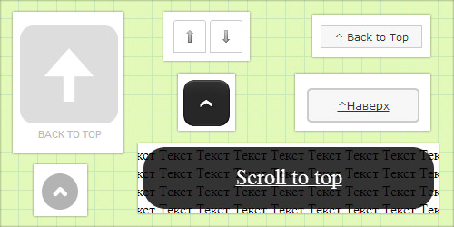

Кнопка вверх для сайта - более 7 проверенных решений
Кнопка "Вверх" играет большую роль в улучшении удобства пользователя, особенно на тех страница которые сильно нагромождены контентом. А так как в настоящее время контент для сайта самое главное, то его на страницах, как правило, становится все больше и больше и самым лучшим способом перенаправить посетителя вверх страницы являются различные специальные кнопки, как сделать кнопку наверх для своего сайта мы рассмотрим в данной статье.

Для чего нужна данная кнопка и в каких случаях ее лучше всего использовать
Когда на странице сайта расположено большое количество контента пользователь ознакомившись с ним и промотав страницу до определенного момента или до самого низа, часто начинает скролить ее верх, чтобы увидеть навигационные ссылки расположенные в верхней части страницы и\или произвести какие-то действия.
Чтобы добавить удобства пользователям и в целом улучшить юзабилити своего сайта лучше всего использовать для сайта кнопку вверх, нажав на которую пользователь автоматически перенаправляется в верхнюю часть страницы.
1. Простая кнопка "Наверх" без JavaScript
Существует очень простой способ предоставить пользователю такой функционал. Этот способ не требует задействования каких либо библиотек или дополнительных скриптов и делается исключительно при помощи HTML и при желании с задействованием CSS, путем создания обыкновенной внутренней ссылки.
Для того, чтобы это сделать в любом месте, внизу вашей страницы, просто добавьте следующий код:
<a href="#" title="Вернуться к началу" class="topbutton">^Наверх</a>
Как вы видите ссылке задан класс .topbutton используя который, при помощи CSS, вы можете придать ссылке любой, необходимый вам вид, например вид той же кнопки.
Пример CSS кода:
width:100px;
border:2px solid #ccc;
background:#f7f7f7;
text-align:center;
padding:10px;
position:fixed;
bottom:50px;
right:50px;
cursor:pointer;
color:#333;
font-family:verdana;
font-size:12px;
border-radius: 5px;
-moz-border-radius: 5px;
-webkit-border-radius: 5px;
-khtml-border-radius: 5px;
}
Недостатки:
- Кнопки сделанные с применением JavaScript могут быть плавающими и появляться сразу как только пользователь спустился немного в низ по странице, а в приведенном примере она будет отображаться постоянно.
- Прокрутка не будет плавной и после нажатия пользователь будет мгновенно перенаправлен вверх страницы.
Плюсы данного вида кнопки:
+ Для работы кнопки не нужно задействовать скрипты и большие, по объему, библиотеки. И это очень большой плюс.
2. Кнопка наверх с помощью jQuery
Кнопка реализована достаточно просто. Для ее функционирования понадобится библиотека jQuery, небольшой скрипт содержащий события jQuery, определенные стили и тег DIV содержащий сам текст и необходимый ID.
Кнопка работает в браузерах начиная с версий Firefox 3.0.10 - 3.6.13, Internet Explorer 7 и 8, Google Chrome, Jquery 1.4.3. К сожалению кнопка не работает в IE 6, а оно вам надо :) ?
JQuery JavaScript код:
Представленный ниже код вам необходимо вставить переде тегом </head> на всех страницах вашего сайта. Если библиотека jQuery уже подключена к вашему сайту, то первую строчку добавлять не нужно.
<script src="http://ajax.googleapis.com/ajax/libs/jquery/1.7.1/jquery.min.js"></script>
<script type="text/javascript">
$(function() {
$(window).scroll(function() {
if($(this).scrollTop() != 0) {
$('#toTop').fadeIn();
} else {
$('#toTop').fadeOut();
}
});
$('#toTop').click(function() {
$('body,html').animate({scrollTop:0},800);
});
});
</script>
CSS код:
Чтобы придать красивый внешний вид кнопке необходимо добавить следующие стили. Их лучше всего добавить в файл стилей вашего сайта.
width:100px;
border:1px solid #ccc;
background:#f7f7f7;
text-align:center;
padding:5px;
position:fixed;
bottom:10px; /* отступ кнопки от нижнего края страницы*/
right:10px;
cursor:pointer;
display:none;
color:#333;
font-family:verdana;
font-size:11px;
}
HTML код:
Для вызова кнопки добавьте следующий HTML код перед тегом </body>.
<DIV ID = "toTop" > ^ Наверх </ DIV >
3. UItoTop JQuery плагин
Простой плагин делающий плавное появление кнопки и плавный скроллинг вверх при нажатии на ее. Чтобы задействовать плагин на своем сайте нет необходимости добавлять какие либо теги в разметку HTML страницы. Достаточно подключить все необходимые файлы плагина и он будет работать.
Исходники
В представленном архиве находится 3 папки: css - файл стилей кнопки, img - изображение и папка js в которой находятся 4 JavaScript файла.
Подключение JavaScript файлов:
Распакуйте скачанный архив с исходниками в какую либо папку вашего сайта. Для задействования плагина нам достаточно подключить три из имеющихся js файлов. Для их подключения перед закрывающим тегом </body> добавьте следующие пути к файлам:
<script src="/js/jquery-1.7.2.min.js" type="text/javascript"></script>
<!-- easing plugin ( optional ) -->
<script src="/js/easing.js" type="text/javascript"></script>
<!-- UItoTop plugin -->
<script src="/js/jquery.ui.totop.js" type="text/javascript"></script>
<!-- Starting the plugin -->
<script type="text/javascript">
$(document).ready(function() {
/*
var defaults = {
containerID: 'toTop', // fading element id
containerHoverID: 'toTopHover', // fading element hover id
scrollSpeed: 1200,
easingType: 'linear'
};
*/
$().UItoTop({ easingType: 'easeOutQuart' });
});
</script>
Пути ведущие к файлам исправьте в соответствии с тем в каком каталоге располагаются файлы плагина.
Обратите внимание, если ранее вы уже подключили к своему сайту библиотеку jQuery, то добавлять следующий код не нужно:
<script src="/js/jquery-1.7.2.min.js" type="text/javascript"></script>
Добавление CSS:
Следующий шаг это добавление CSS стилей, без них кнопка не заработает. Подключить их можно двумя способами.
Первый способ это добавить на все страницы вашего сайта между тегами <head></head> ссылку на CSS файл стилей:
<link rel="stylesheet" media="screen,projection" href="/css/ui.totop.css" />
Не забудьте только изменить путь к файлу.
Второй способ это скопировать все содержимое файла ui.totop.css и вставить его в файл CSS стилей вашего сайта. Второй способ будет более рациональным так как не требует подключения лишних файлов.
4. Кнопки прокрутки вверх и вниз на JQUERY
Данное решение позволяет перемещаться как вниз так и вверх страницы т. к. состоит из двух кнопок. Кнопки фиксировано располагаются в левой части страницы. При произведении скроллинга кнопки плавно мерцают. Этот эффект вы можете увидеть просмотрев демо.
Исходники
В скачанном архиве будут находится все файлы необходимые для функционирования кнопки. Это CSS, JS файлы и файлики изображений стрелок.
Подключить HTML:
Для начала нужно разместить HTML код вызова кнопок, на всех страницах сайта. Для этого поместите нижерасположенный текст сразу перед тегом </body>.
<div style="display:none;" class="nav_up" id="nav_up"></div>
<div style="display:none;" class="nav_down" id="nav_down"></div>
Подключение JavaScript:
Сразу после HTML кода, перед тегом </body> разместите код вызова необходимых JavaScript файлов и JQuery код.
<script src="/jquery-1.3.2.js" type="text/javascript"></script>
<script src="/scroll-startstop.events.jquery.js" type="text/javascript"></script>
<script>
$(function() {
var $elem = $('#content');
$('#nav_up').fadeIn('slow');
$('#nav_down').fadeIn('slow');
$(window).bind('scrollstart', function(){
$('#nav_up,#nav_down').stop().animate({'opacity':'0.2'});
});
$(window).bind('scrollstop', function(){
$('#nav_up,#nav_down').stop().animate({'opacity':'1'});
});
$('#nav_down').click(
function (e) {
$('html, body').animate({scrollTop: $elem.height()}, 800);
}
);
$('#nav_up').click(
function (e) {
$('html, body').animate({scrollTop: '0px'}, 800);
}
);
});
</script>
Пути ведущие к JS файлам необходимо заменить на свои.
В первой строчке кода подключается библиотека JQuery, поэтому если ранее вы уже ее подключали к своему сайту, то ее необходимо убрать.
Далее следует подключение еще одного JS файла и код содержащий определенные функции, которые необходимо рассмотреть подробнее. Потому как про помощи их можно изменять некоторые параметры работы кнопок. Ниже приведен код с разъяснениями:
// content - это идентификатор того дива внутри которого должно лежать все содержимое, которое должно прокручиваться, если все содержимое страниц вашего сайта лежит в другом id, то можете его сюда вписать, т. к. без этого кнопки работать не будут
$(function() {
var $elem = $('#content');
// при помощи следующих двух строчек производится показ кнопок
$('#nav_up').fadeIn('slow');
$('#nav_down').fadeIn('slow');
// при прокрутке у кнопок появляется эффект затухания, реализовано это изменением их прозрачности, поэтому меняя показатель 0,2 в диапазоне от 0,1 до 1 можно регулировать их прозрачность
$(window).bind('scrollstart', function(){
$('#nav_up,#nav_down').stop().animate({'opacity':'0.2'});
});
// здесь можно регулировать ту же прозрачность, но уже в тот момент когда кнопки просто отображаются на странице, по умолчанию значение - 1
$(window).bind('scrollstop', function(){
$('#nav_up,#nav_down').stop().animate({'opacity':'1'});
});
// изменяя число 800 можно увеличивать или уменьшать скорость прокрутки страницы вверх
$('#nav_down').click(
function (e) {
$('html, body').animate({scrollTop: $elem.height()}, 800);
}
);
// то же, что и выше но для прокрутки вниз
$('#nav_up').click(
function (e) {
$('html, body').animate({scrollTop: '0px'}, 800);
}
);
});
</script>
Подключение CSS:
Для того, чтобы добавить CSS просто подключите к страницам сайта файл style.css, находящийся в архиве с исходниками:
<link rel="stylesheet" type="text/css" href="/css/style.css" media="screen"/>
А самым лучшим вариантом будет скопировать стили этого файла и вставить их в файл стилей своего сайта.
5. Кнопка плавной прокрутки вверх при помощи JQuery
Еще один вариант организации плавной прокрутки содержимого страницы, с низу вверх, при помощи JQuery. Кнопка находится в правой нижней части страницы и появляется только если немного проскролить страницу вниз. Все реализовано при помощи небольшого кусочка CSS и JS кода, а так же небольшой картинки использующейся в качестве кнопки.
Мне эта кнопка нравится тем, что для ее создания не требуется большое количество скриптов при этом она имеет неплохие эффекты.
Теперь разберемся, что нужно сделать для подключения кнопки к сайту
Изображение:
Вам понадобится изображение самой кнопки можете взять любое, а можете использовать вот это: icon_top.png
HTML код:
Для вызова кнопки после основного контента страницы или перед тегом </body> разместите следующий HTML код:
<a href="#" class="scrollup">Наверх</a>
CSS стили:
width:40px;
height:40px;
opacity:0.3;
position:fixed;
bottom:50px;
right:100px;
display:none;
text-indent:-9999px;
background: url('icon_top.png') no-repeat;
}
При помощи этого кода кроме внешнего вида мы определяем позицию кнопки и задаем отступы 100 px с права и 50 px снизу. Его лучше всего добавить в файл стилей вашего сайта.
JQuery:
Для начала подключаем библиотеку, если она еще не подключена для вашего сайта. Для этого между тегами <head>...</head>? вставляем следующее:
<script src="http://ajax.googleapis.com/ajax/libs/jquery/1.7.1/jquery.min.js"></script>
Затем сразу после подключения библиотеки необходимо расположить следующий код JQuery:
<script type="text/javascript">
$(document).ready(function(){
$(window).scroll(function(){
if ($(this).scrollTop() > 100) {
$('.scrollup').fadeIn();
} else {
$('.scrollup').fadeOut();
}
});
$('.scrollup').click(function(){
$("html, body").animate({ scrollTop: 0 }, 600);
return false;
});
});
</script>
Первый ScrollTop - определяет текущее вертикальное положение полосы прокрутки и если оно становится больше 100 px, то автоматически появляется кнопка. Если хотите чтобы она появлялась раньше или позже изменить в необходимую сторону это значение.
Как вы видите есть еще два параметра - 0 - значит страница будет прокручена вверх до самого начала до нулевого пикселя, а 600 - это скорость анимации в миллисекундах.
Источник: http://gazpo.com/2012/02/scrolltop/
6. Анимированная кнопка перехода вверх
При прокрутке страницы на определенное количество символов вниз, слева в нижней части появляется большая кнопка со стрелочкой. При наведении курсора кнопка плавно загорается, а при клике происходит плавная прокрутка вверх.
Для создания кнопки используется изображение стрелки, CSS стили и JQuery.
Изображение:
Изображение стрелки использующееся для кнопки можете взять здесь: up-arrow.png
HTML код:
Для вызова кнопки используется следующий HTML код:
<a href="#top"><span></span>Back to Top</a>
</p>
Но помещать его нужно непосредственно перед основным содержимым страницы, если поместить его перед закрывающим тегом </body>, то кнопка не будет работать.
И еще один важный момент, касающийся HTML кода. Тегу <body> вы должны присвоить идентификатор top.
В случае если тегу <body> уже присвоен определенный id, тогда в коде вызова кнопки, размещенном чуть выше, #top нужно заменить на #ваш-id
CSS код:
При помощи CSS заданы отступы и внешний вид кнопки, добавлено свойство transition: для создания эффекта задержки при наведении курсора. Вставлять его лучше в CSS файл вашего сайта.
position: fixed;
bottom: 30px;
margin-left: -150px;
}
#back-top a {
width: 108px;
display: block;
text-align: center;
font: 11px/100% Arial, Helvetica, sans-serif;
text-transform: uppercase;
text-decoration: none;
color: #bbb;
/* transition */
-webkit-transition: 1s;
-moz-transition: 1s;
transition: 1s;
}
#back-top a:hover {
color: #000;
}
/* arrow icon (span tag) */
#back-top span {
width: 108px;
height: 108px;
display: block;
margin-bottom: 7px;
background: #ddd url(up-arrow.png) no-repeat center center;
/* rounded corners */
-webkit-border-radius: 15px;
-moz-border-radius: 15px;
border-radius: 15px;
/* transition */
-webkit-transition: 1s;
-moz-transition: 1s;
transition: 1s;
}
#back-top a:hover span {
background-color: #777;
}
JQuery код:
<script type="text/javascript" src="http://ajax.googleapis.com/ajax/libs/jquery/1.4.3/jquery.min.js"></script>
<script>
$(document).ready(function(){
// hide #back-top first
$("#back-top").hide();
// fade in #back-top
$(function () {
$(window).scroll(function () {
if ($(this).scrollTop() > 100) {
$('#back-top').fadeIn();
} else {
$('#back-top').fadeOut();
}
});
// scroll body to 0px on click
$('#back-top a').click(function () {
$('body,html').animate({
scrollTop: 0
}, 800);
return false;
});
});
});
Первая строчка это подключение библиотеки JQuery, если у вас она уже подключена, то эту строчку не добавляйте. Остальной код добавьте между тегами <head>...</head>
При необходимости можете изменить следующие параметры:
7. Полупрозрачная кнопка при помощи JQuery и CSS
Большая полупрозрачная кнопка вверх появляющаяся при скроллинге по центру страницы. Не заметить ее трудно. Сделана только при помощи JQuery и CSS.
Разбираемся с HTML:
Для работы кнопки основное содержимое страницы, которое должно прокручиваться, необходимо поместить между двумя тегами:
<!-- здесь должно находится основное содержимое страницы -->
<div id="message"><a href="#top">Scroll to top</a></div>
CSS код:
Здесь ничего особенного нет, просто вставьте данный код в файл CSS стилей вашего сайта.
{
/* display: block before hiding */
display: block;
display: none;
/* link is above all other elements */
z-index: 999;
/* link doesn't hide text behind it */
opacity: .8;
/* link stays at same place on page */
position: fixed;
/* link goes at the bottom of the page */
top: 100%;
margin-top: -80px; /* = height + preferred bottom margin */
/* link is centered */
left: 50%;
margin-left: -160px; /* = half of width */
/* round the corners (to your preference) */
-moz-border-radius: 24px;
-webkit-border-radius: 24px;
/* make it big and easy to see (size, style to preferences) */
width: 300px;
line-height: 48px;
height: 48px;
padding: 10px;
background-color: #000;
font-size: 24px;
text-align: center;
color: #fff;
jQuery код:
<script type="text/javascript" src="http://ajax.googleapis.com/ajax/libs/jquery/1.4.3/jquery.min.js"></script>
<script type="text/javascript">
$(function () {
/* set variables locally for increased performance */
var scroll_timer;
var displayed = false;
var $message = $('#message a');
var $window = $(window);
var top = $(document.body).children(0).position().top;
/* react to scroll event on window */
$window.scroll(function () {
window.clearTimeout(scroll_timer);
scroll_timer = window.setTimeout(function () {
if($window.scrollTop() <= top)
{
displayed = false;
$message.fadeOut(500);
}
else if(displayed == false)
{
displayed = true;
$message.stop(true, true).show().click(function () { $message.fadeOut(500); });
}
}, 100);
});
});
</script>
Первая строчка - это подключение библиотеки, если к вашему сайту она уже подключена значит опускаем ее. Весь код помещаем между тегами <head>...</head>.
Источник: http://briancray.com/posts/scroll-to-top-link-jquery-css/
Расширения для Joomla и плагины для WordPress позволяющие создавать кнопку "Наверх".
На мой взгляд на любой CMS лучше всего использовать одно из представленных выше решений, но если вы не знаете как подключить приведенные скрипты к своему сайту на Joomla или WordPress, то можете воспользоваться следующими готовыми, бесплатными расширениями и плагинами.
Расширения для Joomla:
Scroll to Top: http://extensions.joomla.org/extensions/structure-a-navigation/site-navigation/24769
Skyline Scroll to Top: http://extensions.joomla.org/extensions/structure-a-navigation/site-navigation/19772
Top of the Page: http://extensions.joomla.org/extensions/structure-a-navigation/site-navigation/16807
Плагины для WordPress:
Найти самые популярные плагины для создания такого функционала вы сможете по ссылке: http://wordpress.org/plugins/tags/scroll-to-top
Материал подготовлен проектом: WebMasterMix.ru
Рекомендуем ознакомиться:
1 1 1 1 1 1 1 1 1 1 Рейтинг 4.64 (66 Голосов)
{kind=link}
{kind=link}